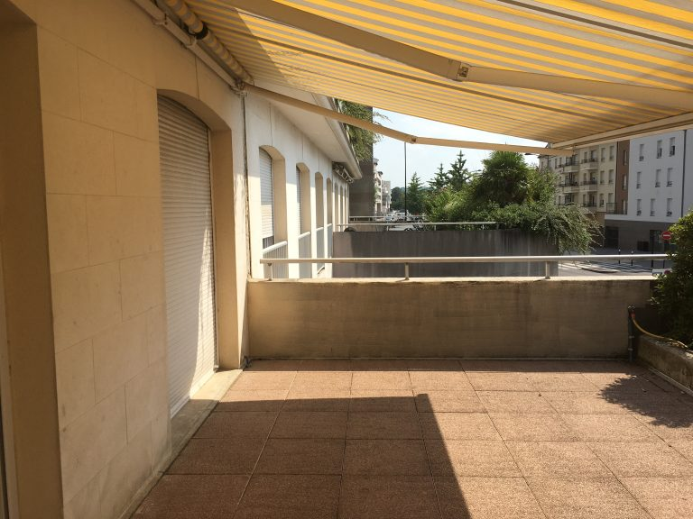
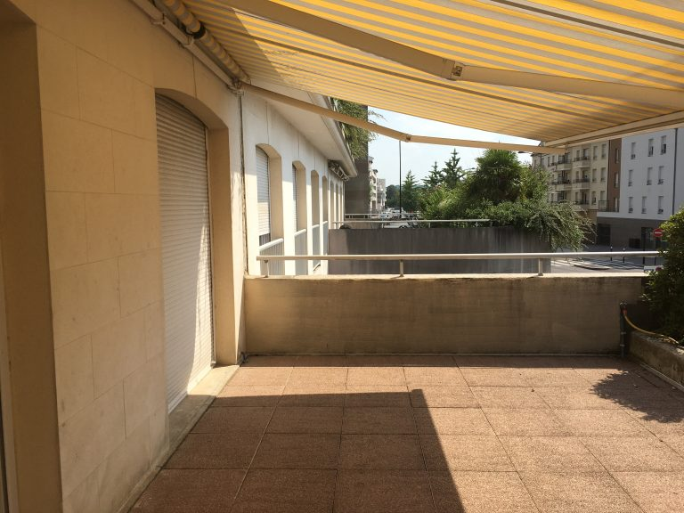

Rueil Malmaison
Location de bureaux professionnels
Foncière Pagerie Malmaison est une entreprise de location de bureaux professionnels située 16 avenue des Chateaupieds 92500 RUEIL-MALMAISON. Nos bureaux sont conçus pour répondre aux besoins des entreprises modernes et offrir un environnement de travail confortable et stimulant pour les professionnels. Avec un design épuré et une attention portée aux détails, nos locaux sont équipés pour répondre à vos exigences. Nous sommes convaincus que nos bureaux sont l’endroit idéal pour les entreprises ambitieuses et nous invitons tous les professionnels à venir visiter nos locaux pour découvrir l’expérience Foncière Pagerie Malmaison.

 
